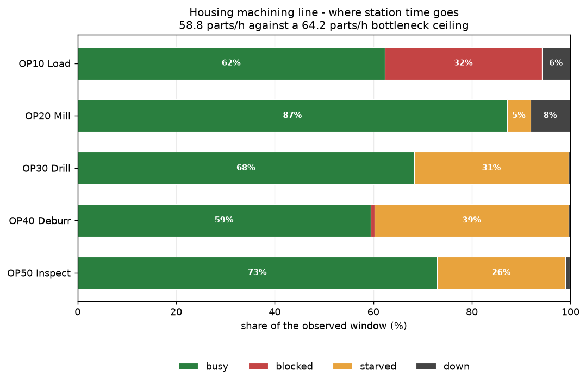
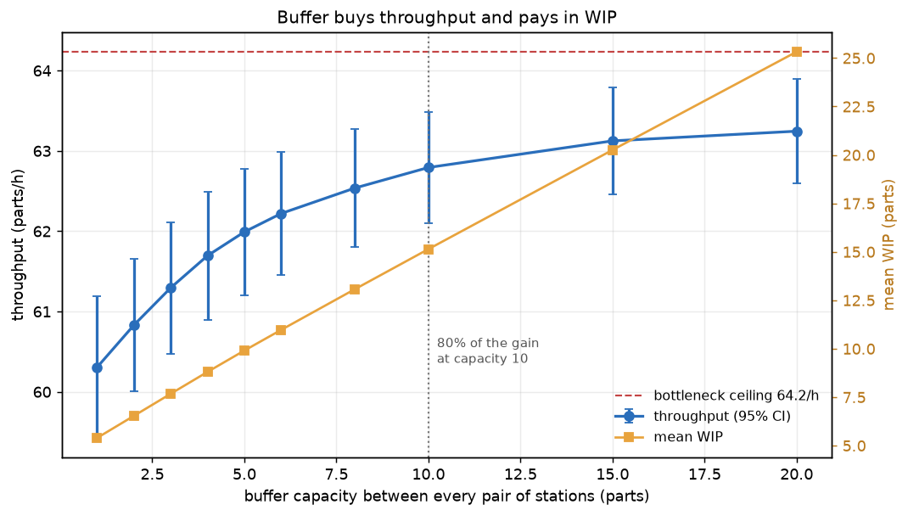
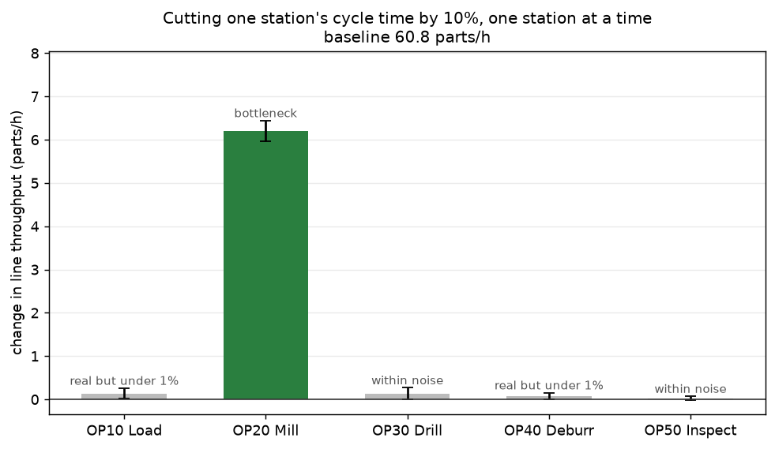
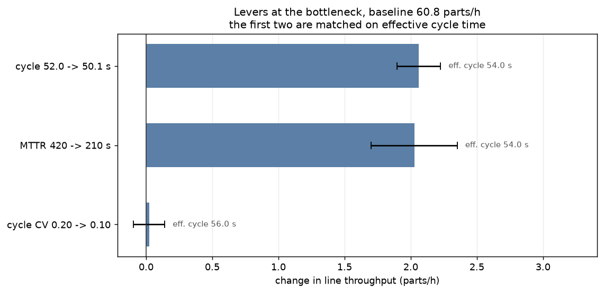

Discrete-event simulation · 5 stations · buffers [2, 2, 2, 2] · 8 h observed after a 1 h warm-up · generated 2026-10-31 05:40
Little's law check. Mean WIP 6.17 parts against throughput × flow time = 6.22 (0.74% apart). This is a conservation identity, not a model output: a run that fails it has broken bookkeeping. The small residual is the parts already in the line when the warm-up window closed.

| station | busy | blocked | starved | down | failures | parts | waits on |
|---|---|---|---|---|---|---|---|
| OP10 Load | 62.3% | 31.8% | 0.0% | 5.8% | 4 | 479 | blocked (downstream full) |
| OP20 Mill | 87.2% | 0.0% | 4.7% | 8.1% | 6 | 480 | pace-setter (waits on nobody) |
| OP30 Drill | 68.3% | 0.0% | 31.3% | 0.3% | 1 | 479 | starved (upstream empty) |
| OP40 Deburr | 59.4% | 0.9% | 39.3% | 0.3% | 2 | 478 | starved (upstream empty) |
| OP50 Inspect | 72.9% | 0.0% | 26.1% | 0.9% | 2 | 478 | starved (upstream empty) |
No station is overloaded, yet the line makes 58.8 parts/h against a 64.2 parts/h ceiling. The gap is not downtime - the downtime is already inside the ceiling. It is the cost of variability plus finite buffers, and it cannot be fixed by fixing machines. OP40 Deburr idles 39% of the window waiting for work that the bottleneck has not released yet.

| capacity | throughput (parts/h) | mean WIP | flow time (min) | marginal parts/h per WIP part |
|---|---|---|---|---|
| 1 | 60.31 ± 0.88 | 5.40 | 5.3 | nan |
| 2 | 60.83 ± 0.83 | 6.54 | 6.3 | 0.461 |
| 3 | 61.30 ± 0.82 | 7.68 | 7.4 | 0.407 |
| 4 | 61.70 ± 0.80 | 8.81 | 8.4 | 0.354 |
| 5 | 61.99 ± 0.79 | 9.91 | 9.4 | 0.269 |
| 6 | 62.22 ± 0.77 | 10.97 | 10.4 | 0.215 |
| 8 | 62.54 ± 0.74 | 13.07 | 12.3 | 0.151 |
| 10 | 62.79 ± 0.69 | 15.14 | 14.2 | 0.124 |
| 15 | 63.12 ± 0.67 | 20.26 | 18.9 | 0.065 |
| 20 | 63.25 ± 0.65 | 25.33 | 23.5 | 0.024 |
12 replications per point, 40 h each. The marginal column is the decision: every extra part of WIP buys less than the one before, and flow time - how long a quality problem stays undetected on the line - rises with it the whole way.

| station made 10% faster | throughput (parts/h) | paired change | verdict |
|---|---|---|---|
| OP10 Load | 60.97 ± 0.87 | +0.14 ± 0.12 | real but under 1% |
| OP20 Mill | 67.03 ± 0.98 | +6.20 ± 0.24 | material |
| OP30 Drill | 60.96 ± 0.79 | +0.13 ± 0.14 | within noise |
| OP40 Deburr | 60.91 ± 0.83 | +0.08 ± 0.07 | real but under 1% |
| OP50 Inspect | 60.86 ± 0.81 | +0.03 ± 0.05 | within noise |
Baseline 60.83 ± 0.83 parts/h. The change column is the paired difference: every variant is run on the same seeds, so replication k of the improved line shares every failure time at every station the change did not touch. The shared variation cancels inside each pair, which is why the interval on a change is far tighter than the interval on either line's absolute throughput. "Within noise" means that paired interval still contains zero.

| lever at OP20 Mill | effective cycle (s) | throughput (parts/h) | paired change | verdict |
|---|---|---|---|---|
| cycle 52.0 -> 50.1 s | 54.02 | 62.89 ± 0.90 | +2.06 ± 0.17 | material |
| MTTR 420 -> 210 s | 54.02 | 62.86 ± 0.62 | +2.03 ± 0.33 | material |
| cycle CV 0.20 -> 0.10 | 56.04 | 60.85 ± 0.82 | +0.02 ± 0.12 | within noise |
Baseline 60.83 ± 0.83 parts/h. The first two levers are matched on effective cycle time, so a capacity calculation would price them identically. The third does not change effective cycle time at all - cycle variability is invisible to that calculation, which is precisely why it gets overlooked.